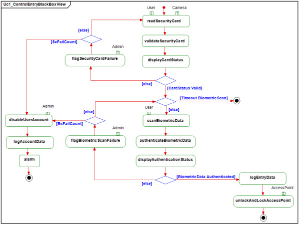

Guidelines and Drawing Conventions
-
An activity diagram is used to describe the functional flow through a use case.
-
Document the pre-conditions in the respective tag of the diagram.
-
Actor swim lanes should not be used. The link of an action node to the actor should be described through action
pins.
-
When performing a recursive decomposition of a complex system, the action nodes at one system tier can become the
use cases in the next lower system tier.
-
Activity diagrams should flow vertically from top to bottom. The initial node should be located near the top of the
diagram and any final nodes should be located near the bottom of the diagram.
-
Use the statechart action language to express guards to provide the best transition to statechart diagrams.
-
All flow lines shall be rectilinear or straight. Flow lines should not cross each other or cross through
action nodes.
-
Diagram connectors should only be used when the readability of an activity diagram is disturbed by a direct flow
line.
-
Flow lines cannot have triggers.
-
All action nodes should have one exit flow. Any scenarios with multiple flows out of an action node should be drawn
using an explicit decision node.
Naming Conventions
-
The diagram shall have the associated use case name in plain text at the top of the diagram.
-
Action node names shall start with a verb, beginning with a lower case letter, and map directly to the names of
operations on system blocks.

|